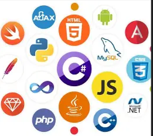

Skills

Programming Languages
C#, VB.NET, JavaScript, SQL

Frameworks & Tools
ASP.NET MVC, ASP.NET Core, Redux, Telerik UI
Cloud & DevOps
Azure Functions, Azure Logic Apps, Azure DevOps, Git

Databases
SQL Server (SSMS), Elasticsearch
Data & Messaging
Apache Kafka, RESTful APIs

Testing & Debugging
Postman, Debugging ASP.NET, Error Logging

Other
UI/UX Optimization, Accessibility (WCAG 2.1), On-call Support